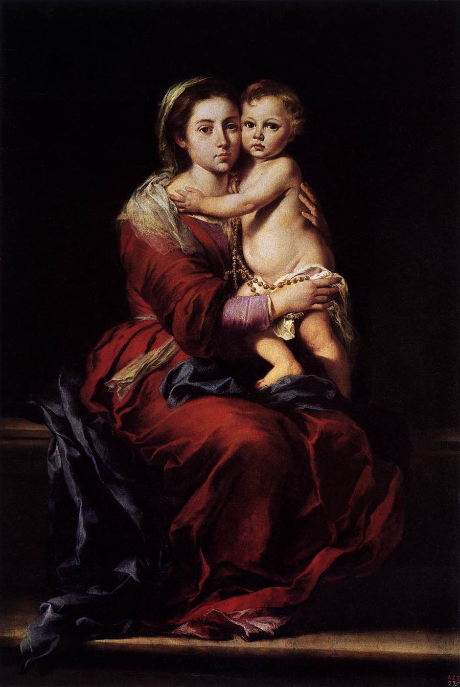

213. MY DEAR brother, be sure that, if you are faithful to the interior and exterior practices of this devotion, which I will point out, the following effects will take place in your soul.
§ 1. By the light which the Holy Ghost will give you by His dear Spouse, Mary, you will understand your own evil, your corruption, and your incapacity for anything good, which is not God’s free gift to us, either as Author of nature or of grace. In consequence of this knowledge, you will despise yourself. You will only think of yourself with horror. You will regard yourself as a snail, that spoils everything with its slime; or a toad, that poisons everything with its venom; or as a spiteful serpent, only seeking to deceive. In other words, the humble Mary will communicate to you a portion of her profound humility, which will make you despise yourself, despise nobody else, but love to be despised yourself.
214. § 2. Our Blessed Lady will give you also a portion of her faith, which was the greatest of all faiths that ever were on earth, greater than the faith of all the Patriarchs, Prophets, Apostles, and Saints put together. Now that she is reigning in the heavens, she has no longer this faith, because she sees all things clearly in God by the light of glory. Nevertheless, with the consent of the Most High, in entering into glory she has not lost her faith. She has kept it, in order that she may keep it in the Church Militant for her faithful servants. The more, then, you gain the favour of that august Princess and faithful Virgin, the more will you go by pure faith in all your conduct; a pure faith which will make you hardly care at all about the sensible and the extraordinary; a lively faith animated by charity, which will enable you to perform all your actions from the motive of pure love; a faith firm and immovable as a rock, through which you will rest quiet and constant in the midst of storms and hurricanes; a faith active and piercing, which, like a mysterious pass-key, will give you entrance into all the mysteries of Jesus, into the Last Ends of man, and into the Heart of God Himself; a courageous faith, which will enable you to undertake and carry out without hesitation great things for God and for the salvation of souls; lastly, a faith which will be your blazing torch, your divine life, your hidden treasure of divine wisdom, and your omnipotent arm, which you will use to enlighten those who are in the darkness of the shadow of death, to inflame those who are lukewarm and who have need of the heated gold of charity, to give life to those who are dead in sin, to teach and overthrow, by your meek and powerful words, the hearts of marble and the cedars of Lebanon, and finally, to resist the devil and all the enemies of salvation.
215. § 3. This Mother of fair love will take away from your heart all scruple and all disorder of servile fear. She will open and enlarge it to run the way of her Son’s commandments with the holy liberty of the children of God. She will introduce into it pure love, of which she has the treasure; so that you shall no longer be guided by fear, as hitherto, in your dealings with the God of charity, but by pure love. You will look on Him as your good Father, whom you will be incessantly trying to please, and with whom you will converse confidently, as a child with its tender father. If unfortunately you offend Him, you will at once humble yourself before Him. You will ask His pardon with great lowliness, but at the same time you will stretch your hand out to Him with simplicity; and you will raise yourself up lovingly, without trouble or disquietude, and go on your way to Him without discouragement.
216. § 4. Our Blessed Lady will fill you with a great confidence in God and in herself:
§ 4.1. Because you will not be approaching to Jesus by yourself, but always by that good Mother;
§ 4.2. Because, as you have given her all your merits, graces, and satisfactions, to dispose of at her will, she will communicate to you her virtues, and will clothe you in her merits, so that you will be able to say to God with confidence, “Behold Mary Thy handmaid; be it done unto me according to Thy word,”—Ecce ancilla Domini, fiat mihi secundum verbum tuum;
§ 4.3. Because, as you have given yourself entirely to her, body and soul, she, who is liberal with the liberal, and more liberal even than the liberal, will in return give herself to you in a marvellous but real manner, so that you may say to her with assurance, Tuus sum ego, salvum me fac—“I am thine, holy Virgin; save me:” or, as I have said before, with the Beloved Disciple, Accepi te in mea, “I have taken thee, holy Mother, for all my goods.” You may also say with St. Bonaventure, Ecce, Domina, salvatrix mea, fiducialiter agam et non timebo, quia fortitudo mea, et laus mea in Domino es tu; and in another place, Tuus totus ego sum, et omnia mea tua sunt; O virgo gloriosa, super omnia benedicta, ponam te ut signaculum super cor meum, quia fortis est ut mors dilectio tua. “My dear Mistress, who saves me, I will have confidence and will not fear, because you are my strength and my praise in the Lord. . . . I am altogether yours, and all that I have belongs to you; O glorious Virgin, blessed above all created things! I will put you as a seal upon my heart, because your love is as strong as death.” You may say to God, in the sentiments of the prophet, Domine, non est exaltatum cor meum, neque elati sunt oculi mei; neque ambulavi in magnis, neque in mirabilibus super me, si non humiliter sentiebam; sed exaltavi animam meam: sicut ablactatus est super matre tua, ita retributio in anima mea—“Lord, my heart and my eyes have no right to extol themselves, or to be proud, or to seek great and wonderful things. Yet even in this I am not humble; but I have lifted up and encouraged my soul by confidence: I am like a child, weaned from the pleasures of earth, and resting on its mother’s lap; and it is on that lap that all good things come to me” (see Psalm cxxx.).
§ 4.4. What will still further increase your confidence in her is, that you will have less confidence in yourself. You have given her, in trust, all you have of good about you, that she may have it and keep it; and so all the trust you once had in yourself has become an increase of confidence in her, who is your treasure. Oh, what confidence and what consolation is this for a soul, who can say that the treasure of God, where He has been pleased to put all He had most precious, is his own treasure also! Ipsa est thesaurus Domini. It was a Saint who said she was the treasure of the Lord.
217. § 5. The soul of our Blessed Lady will communicate itself to you, to glorify the Lord. Her spirit will enter into the place of yours, to rejoice in God her salvation, provided only that you are faithful to the practices of this devotion. Sit in singulis anima Marice, ut magnificet Dominum: sit in singulis spiritus Marice, ut exultet in Deo (St. Ambrose)—“Let the soul of Mary be in each of us to glorify the Lord: let the spirit of Mary be in each of us to rejoice in God.” Ah! when will the happy time come, said a holy man of our own days, who was all absorbed in Mary—ah! when will the happy time come, when the divine Mary will be established mistress and queen of hearts, in order that she may subject them fully to the empire of her great and holy Jesus? When will souls breathe Mary, as the body breathes air? When that time comes, wonderful things will happen in those lowly places, where the Holy Ghost, finding His dear Spouse as it were reproduced in souls, shall come in with abundance, and fill them full to overflowing with His gifts, and particularly with the gift of wisdom, to work the miracles of grace. My dear brother, when will that happy time, that age of Mary, come, when souls, losing themselves in the abyss of her interior, shall become living copies of Mary, to love and glorify Jesus? That time will not come until men shall know and practise this devotion which I am teaching. Ut adveniat regnum tuum, adveniat regnum Marice.
218. § 6. If Mary, who is the tree of life, is well cultivated in our soul by fidelity to the practices of this devotion, she will bear her fruit in her own time, and her fruit is none other than Jesus Christ. How many devout souls do I see who seek Jesus Christ, some by one way or by one practice, and others by other ways and other practices; and after they have toiled much throughout the night, they say, Per totam noctem laborantes nihil cepimus—“We have toiled all night, and have taken nothing”! We may say to them, Laborastis multum, et intulistis parum—“You have laboured much, and gained little:” Jesus Christ is yet feeble in you. But by that immaculate way of Mary, and that divine practice which I am teaching, we toil during the day; we toil in a holy place; we toil but little. There is no night in Mary, because there is no sin, nor even the slightest shade. Mary is a holy place, and the holy of holies where Saints are formed and moulded.
219. Take notice, if you please, that I say the Saints are moulded in Mary. There is a great difference between making a figure in relief by blows of hammer and chisel, and making a figure by throwing it into a mould. Statuaries and sculptors labour much to make figures in the first manner; but to make them in the second manner, they work little, and do their work quickly.
St. Augustin calls our Blessed Lady forma Dei—“the mould of God:” Si formam Dei te appellem, digna existis—“The mould fit to cast and mould gods.” He who is cast in this mould is presently formed and moulded in Jesus Christ, and Jesus Christ in him. At a slight expense and in a short time he will become God[4], because he has been cast in the same mould which has formed a God.
220. It seems to me that I can very aptly compare directors and devout persons, who wish to form Jesus Christ in themselves or others by different practices from this, to sculptors who trust in their own professional skill, ingenuity, or art, and so give an infinity of hammerings and chisellings to a hard stone or a piece of badly polished wood, to make an image of Jesus Christ out of it. Sometimes they do not succeed in giving anything like the natural expression of Jesus, either from having no knowledge or experience of the Person of Jesus, or from some blow awkwardly given, which has spoiled the work. But for those who embrace the secret of grace which I am revealing to them, I may reasonably compare them to founders and casters, who have discovered the beautiful mould of Mary, where Jesus was naturally and divinely formed; and without trusting to their own skill, but only in the goodness of the mould, they cast themselves and lose themselves in Mary, to become the portraits of Jesus Christ after nature.
221. Oh, beautiful and true comparison! but who will comprehend it? I desire that you may, my dear brother. But remember that we only cast in a mould what is melted and liquid; that is to say, you must destroy and melt down in yourself the old Adam to become the new one in Mary.
222. § 7. By this practice, faithfully observed, you will give Jesus more glory in a month than by any other practice, however difficult, in many years; and I give the following reasons for it:
§ 7.1. Because, doing your actions by our Blessed Lady, as this practice teaches you, you abandon your own intentions and operations, although good and known, to lose yourself, so to speak, in the intentions of the Blessed Virgin, although they are unknown. Thus you enter by participation into the sublimity of her intentions, which are so pure, that she gives more glory to God by the least of her actions—for example, in twirling her distaff or pointing her needle—than St. Lawrence by his cruel martyrdom on his gridiron, or even all the Saints by all their heroic actions put together. It was thus that, during her sojourn here below, she acquired such an unspeakable aggregate of graces and merits, that it were easier to count the stars of the firmament, the drops of water in the sea, or the grains of sand upon its shore, than her merits and graces. Thus it was that she gave more glory to God than all the Angels and Saints have given Him, or ever will give Him. O prodigy of a Mary! thou canst not help but do prodigies of grace in souls that wish to lose themselves altogether in thee!
223. § 7.2. Because the soul in this practice counts as nothing whatever it thinks or does of itself; and only puts its trust, and takes its pleasure, in the dispositions of Mary, when it approaches Jesus, or even speaks to Him. Thus it practises humility far more than the souls who act of themselves, and lean, with however imperceptible a complacency, on their own dispositions. But if the soul acts more humbly, it therefore glorifies God more highly; and He is only perfectly glorified by the humble, and those that are little and lowly in heart.
224. § 7.3. Because our Blessed Lady, wishing by her great charity to receive the present of our actions in her virginal hands, gives them an admirable beauty and splendour. Moreover, she offers them herself to Jesus Christ, and without difficulty; and our Lord is thus more glorified by them than if we offered them by our own criminal hands.
225. § 7.4. Lastly, because you never think of Mary without Mary, in your place, thinking of God. You never praise or honour Mary without Mary praising and honouring God. Mary is altogether relative to God; and, indeed, I might well call her the relation to God. She only exists with reference to God. She is the echo of God, who says nothing, repeats nothing, but God. If you say ‘Mary,’ she says ‘God.’ St. Elizabeth praised Mary, and called her blessed, because she had believed. Mary, the faithful echo of God, at once intoned Magnificat anima mea Dominum—“My soul doth magnify the Lord.” That which Mary did then, she does daily now. When we praise her, love her, honour her, or give anything to her, it is God who is praised, God who is loved, God who is glorified. We give then to God by Mary and in Mary.
